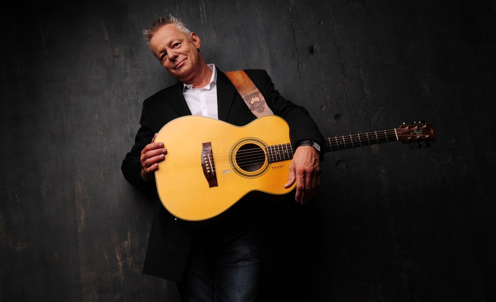
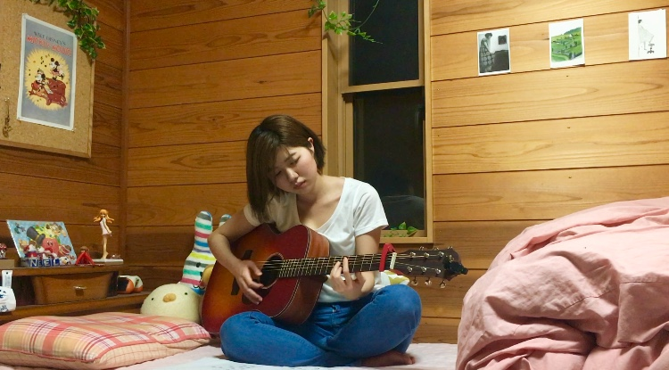

DAY1
Smell
オフライン生活１日目。学校から帰宅。自宅に一歩足を踏み入れた瞬間に鼻につくニンニクの匂い。キッチンでは母が皮に餃子のあんを包んでいた。母の料理している後ろ姿を久しぶりに見たような気がする。オフライン生活の課題もでているし手伝うか〜〜と、母のとなりに肩を並べた。
キッチンいっぱいに広がるニンニクの匂い。フライパンの上の餃子がジュワーーーと音を立てる。こんな風に母と肩を並べて料理を作るのはいつ以来だろうか。横を向くと母の頭のテッペンが見える。お母さんてこんなに小さかったっけ。こんな声だったっけ。心なしか母がいつもより、嬉しそうに見えた。
DAY2
Feeling
この日は日課のギターの練習をしていた。それまで私は全くのオフライン下で練習をした経験は思い出す限りだと0。いつもは大体、YOUTUBEかApple Musicを開き、原曲のリズムに合わせて演奏していた。演奏中に通知が入って、演奏の手が止まってしまうこともしばしば。

オフラインでの演奏は何もかもが自由だった。テンポに縛られることもなければ通知が入って演奏のジャマをされることもない。譜面に羅列されたコードを見てあとは自分の身体にある一番気持ちのいいリズムで弾いて歌うだけ。習ったストロークとコードに飽きたら気持ちいいのに変える。部屋に広がるのは、弦が奏でる音と木のコツコツ音、キーが外れたわたしの声。木と弦の鉄臭い匂いが脳にしみる。喉の渇きも忘れてただひたすら弾いていた。
DAY3
Space
ガタンゴトンキイキイ車輪の音。身体が揺れる。暗闇。そこは電車の中。気づくと私は寝ていた。
普段電車に乗るときは大体いつもイヤホンを耳に突っ込んで音楽を流しながらtwitterを開いている。寝ていても必ずイヤホンはしているのでオンラインは維持。しかし今日はオフライン。どうせ寝るのならオンでもオフでも変わらないと思っていた。でも違った。三半規管を解放することで、暗闇まぶたの裏の私と音楽という処からオフラインは「集団空間の中にいる私」という存在に変えた。
DAY4
Speak
この日はバイトだった。一緒に働くのは一歳上の古谷さんと言うお兄さん。古谷さんとは歳も近いし、話も合うから毎回楽しい。深夜だけど全然眠くならない。スマートフォンをオフラインにしていたことも忘れるくらい。楽しかった。嘘。直前まで友人とSNSでやり取りをしていたので少しだけ返信が気になった。なんの話をしたのかは全く覚えてないけど。
DAY5
Join
ギター教室からお送りします。本日はお日柄もよく絶好のギターです。
昨日に引き続き、普段からあまりオンラインを必要としない場面でオフラインを実行してしまったため、オンライン下での生活との違いを感じられなかった。痛恨のミス。でもこの日も相変わらずギター教室にいる猫は可愛かった。
DAY6
Drawer
「しおりちゃーん。藤井さんがさあ〜〜。」ああまたか………。聞き慣れた声。一緒のシフトの松下さん(65)だ。わたしはこの人が苦手。というか嫌い。少し愚痴を聞いてほしい。この人は家では認知症の母の世話をしている。亡くなった父も認知症だったらしく、介護歴は10年に及ぶ。若い頃は10年くらい実家とは連絡を取らず、代々木ゼミナールに通うと嘘をついて金を出してもらい上京。しかし、一回も行かず、徹夜麻雀。「勿体無かったなーあの金呑んじゃえばよかったなーーー」と今でも言っていた。世の中ってうまくできてる。その上自分のことは棚に上げ、口を開けば他人の悪口ばっかり。でも好きなところもある。この人は根っからの懐古主義。昔の日本の話を時々してくれる。知らないことをその時代を生きた人に聞けるのはとても面白い。ずっとこういう話だけしてくれればいいのに。
DAY7
Hunger
この日も日課のギターの練習をしていた。前にオフラインでギターの練習をしたときに、音楽の楽しさを見出したきがしたのでこの日はその時よりも練習時間を増やしてみることにした。

しかし……。前回よりも練習時間を増やしたため、レパートリーも底を尽きて新しい曲を覚えたくなった。が、いつもオンラインで楽譜を入手しているので、手元に紙媒体の楽譜集は持っておらず八方塞がり。やはりいくらアレンジを加えても何度も同じ曲ばかり演奏するのは飽きる。が、弾き語りはうまくなった気がする。ハングリー精神って大事。
DAY8
Bounce
新車の匂いと目の前に広がる夕日。めっちゃ綺麗。私の車よりも走行中の音が静かで悔しい。この日は母の車でドライブに出かけた。
私が好きな音楽をiPhoneからBluetoothで飛ばす。Bluetoothってオフラインでも使用できるんだね。知らなかった。「この曲いいね〜！なんか弾む感じ〜。」と母が言ってくれるのが嬉しかった。
DAY9
Flow
草の匂い。泥の匂い。川の音。犬の散歩をしているおじさんとジャージ姿の中学生が遠くに見える。今日は体調がよくなかったので学校を休んだ。家で作業をしていたけれど気分転換に土手に駐車して車内で作業しようと思い、車を走らせて土手に向かった。
窓から入ってくる風が頬に触れる。その感覚がとても心地よくて、家にいるより清々しい。頭が冴える。車でカチカチポートフォリオ作りをして、疲れたらたまに外に出てぼーっとした。ぼーっと遠くを眺めていたら、知らない建物が視界に入ってきた。あんなところにあんなマンション建ってたっけ。変わらないと思っていたこの街のこの風景もいつの間にか変わっていたことに気づかされて、少し寂しくなった。
DAY10
Substitution
機内モードをオンにしてください。いつもの癖でTwitterを開いてしまい、忠告文が表示された。あっそうだったとオフラインだったことを思い出した。最終日にしてこのザマである。
この日はベッドに入ってから寝るまでの時間をオフラインで過ごした。いつも寝る前は必ず友達からのLINEを返して、TwitterとInstagramをチェックする。自分で思った以上に寝る前のTwitter、LINE、Instagramが習慣化していることに気づいた。スマホがいじれずなかなか寝付けない。仕方がないので腹筋とストレッチをした。なんとなく、いつもよりも眠れたような気がした。